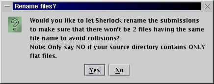
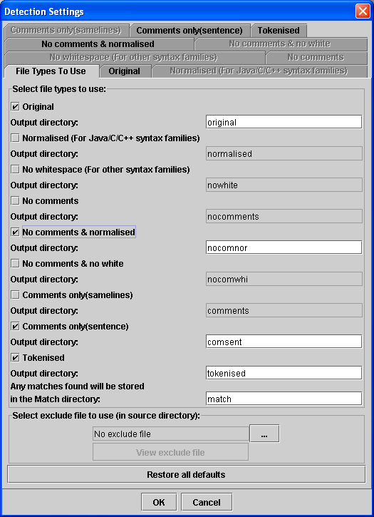
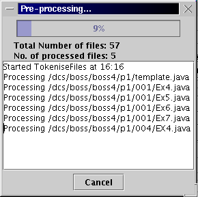
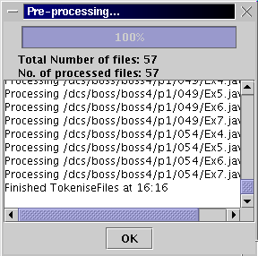

Stage Two: Detection (Source Code)
In the detection stage, the input submissions are pre-processed into various
textual forms:
- Original: This is required for all forms of plagiarism detection. A
copy is made of the file in its original state.
- Normalised or No White Space: Use the Java/C++ mode if
appropriate. This will remove all blank lines from the files and attempt to lay
them out in a consistent coding style if they are from the Java family of
programming languages.
- No Comments: The original form of the file but with all comments
removed.
- No Comments and Normalised: These next two modes are combinations
of the previous modes. This is just the code presented in a consistent format
without commenting.
- Comments Only (samelines): This is just the comments, with individual
words placed on separate lines. Sherlock will try to detect runs of 6 or more
matching words by default. This mode is very slow and is only included out of
interest.
- Comments Only (sentence): This is the mode used by the natural
language detection facilities. On source code submissions the algorithm will
only run on the commented sections of the code. NOTE: This mode only
works on comments from the Java family of programming languages.
- Tokenised: The source code is parsed and each line is assigned a
'token' describing its basic purpose. This is the most accurate form of
detection but is also much slower than the other modes.
The default settings are for the 'Original', 'No Comments and Normalised',
'Comments Only (sentence)' and 'Tokenised' modes to be selected. For extra
speed it is recommended that you switch off the Tokenised mode. For submissions
in Java, C or C++ the default settings are fine and should not be altered except
by advanced users. If your submission is not in one of these languages, try
using 'Original' and 'No Whitespace' modes. You could also write a parser for
the Tokenised form if you have the time and know-how!
In the future, support will be included for defining the comment markers of
the programming language in use so that detection can be more accurate on
non-Java languages.
-Press the "Pre-process files..." button and then
-Press "OK" button for choosing the DEFAULT pre-processing files option.
then a preprocessing message window will pop up to show the process information
Filename format

The files which are to be detected should have unique filenames. If your data
set does not meet this requirement, use the rename function offered by
Sherlock. After you have set the detection settings, Sherlock will prompt you
whether you want it to automatically rename the files or not (refer to the
figure above). This operation generates new filenames for each file by
concatenating its original filename and its parent directory name. This does
not guarantee that the filename is unique globely but should be sufficient
for most cases. If your source directory contains ONLY flat files, this
operation is not necessary.
Detection Setting Window

Note: To change the default option, Click the leftmost square button of each form before press"OK" button.
Pre-processing message windows
|  |
 |
To compare the pre-processing file:
-Press "Detect over pre-processed files..." button and
-Press "OK" button.(Similar to preparing pre-processing files.)
ALTERNATIVELY
Both of the above processes(generating the pre-process files and comparing the files)
can be done by
-Press "Start complete search" button only.
The time for comparison depends on the number and the size of files in the source directory.